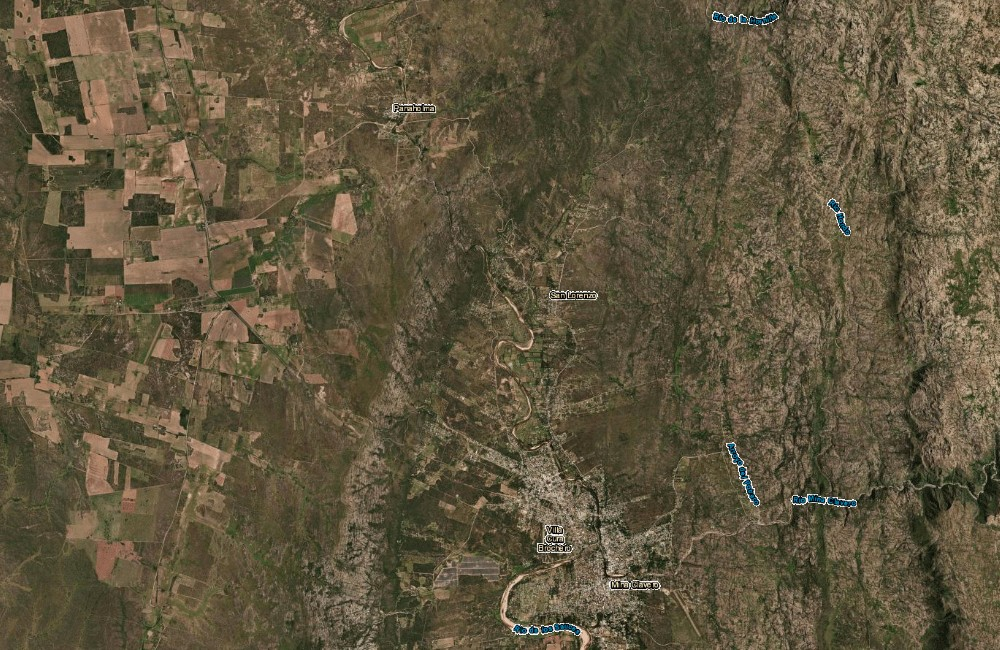

Ministerio Caminos de Fe
"Levantando una generación que camina en fe y brilla con la luz del Evangelio."
Nuestra Visión & Misión
Volver a la sencillez de Jesús: gracia, comunión en las casas, restauración de familias y proclamación con excelencia.
Nuestra Visión
Despertar en Traslasierra una generación consagrada que camine en fe genuina, demostrando el poder del Evangelio a través de relaciones sanas, familias unidas y un testimonio real de amor fraterno, libre de legalismos.
- ✓ Altar de adoración e intercesión permanente en la montaña.
- ✓ Iglesia horizontal y celular organizada bajo el amor de Cristo.
Nuestra Misión
Llevar la Palabra de Dios de forma gratuita y accesible: desde el Centro Base en Mina Clavero hacia células de comunión y mate en los hogares (El Nono, Panaholma, Las Rosas) y cultos masivos de campaña al aire libre, sustentados por ShopDigital.
- ✓ 100% de sustento económico provisto por ShopDigital.
- ✓ Acción comunitaria activa con la Fundación Valle de Luz.
Nuestro Ecosistema Integrado
Un modelo armónico donde la tecnología de alto rendimiento, la vida en la montaña, la acción social y la fe se potencian mutuamente. Conocé cada una de nuestras cuatro plataformas oficiales:
ShopDigital
Empresa madre de software, desarrollo cloud, automatización e IA. Genera el 100% del sustento financiero de la comunidad (Regla 70/20/10).
Faro de Luz
Hábitat modular de montaña en Traslasierra, Córdoba. 6 viviendas en contenedores 40ft, Domo central, microrred solar y Co-Housing.
Valle de Luz
Brazo filantrópico y social. Asistencia a parajes rurales de Traslasierra, comedores y logística con flota Hilux 4x4 y Sprinter.
Caminos de Fe
Centro de culto cristiano, discipulado de jóvenes, campañas espirituales, alabanza y formación pastoral en la montaña y parajes.
Sustento 100% ShopDigital & Cero Diezmos
Software, automatizaciones e IA que generan el 100% del sustento económico del ministerio.
Energía solar, red hídrica, logística de montaña, despensa y tareas del búnker central.
"De gracia recibisteis, dad de gracia." Queda prohibida la coacción monetaria. Las ofrendas voluntarias van 100% a la Fundación Valle de Luz.
Registro Nacional de Cultos (Secretaría de Culto)
Estructuración jurídica en la Provincia de Córdoba ante la IPJ (Código Civil y Comercial de la Nación, Arts. 193-224) para proteger la hectárea y las instalaciones de forma colectiva, transparente y blindada.
Ubicación & Acceso a la Base
Emplazados estratégicamente en un predio de 1 hectárea con agua propia entre Panaholma y Villa Cura Brochero, combinando privacidad serrana, sustentabilidad y rápida conexión a centros urbanos.
Traslasierra, Córdoba
Dpto. San Alberto · Zona SerranaAgua garantizada en el predio con almacenamiento en torre de 22.000 L para distribución por gravedad.
Acceso consolidado transitable todo el año para vehículos particulares y flota comunal Hilux 4x4 / Sprinter.
- • A Panaholma: 8-10 min (Río de aguas templadas y naturaleza).
- • A Villa Cura Brochero / Mina Clavero: 15 min (Hospital regional, comercios y servicios).
- • A Córdoba Capital: 2.5 hs (Por el Camino de las Altas Cumbres).

Galería, Música & Películas de Fe
Te invitamos a explorar nuestra mediateca completa: cultos en vivo, música de adoración, cine y series con valores, discipulado de jóvenes y el archivo histórico con fotografías de los inicios en Traslasierra.
Películas Cristianas
Producciones con mensajes de redención, fe y valores de vida para disfrutar en familia y en células hogareñas.
Música de Altar & Ensayos
Grabaciones en vivo desde el Domo Central, acústicos de montaña, pistas y mezclas maestras de la consola 32 canales.
Archivo de Fotos & Campañas
Los primeros pasos en Traslasierra, armado del domo, bautismos en el río y testimonios milagrosos en parajes rurales.
⚡ Acceso libre y gratuito · Catálogo categorizado con buscador y reproductor en pantalla completa
Sumate a la Ministerio Caminos de Fe
Te invitamos a conectarte con nuestra visión. Al suscribirte recibirás tu Credencial Digital de la Comunidad, noticias exclusivas de nuestros proyectos, reportes de la base de montaña y una línea de contacto directa con el equipo de coordinación y el Director Waly.

🎉 ¡Felicitaciones y bienvenido a la Ministerio Caminos de Fe! Tus datos ingresaron de forma segura al Búnker Central de Coordinación.
El Director Waly y el equipo de coordinación se pondrán en contacto con vos vía WhatsApp para enviarte tu credencial formal, sumarte a la bitácora de novedades y coordinar los próximos pasos.